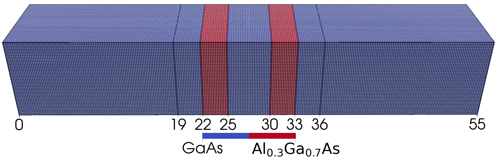
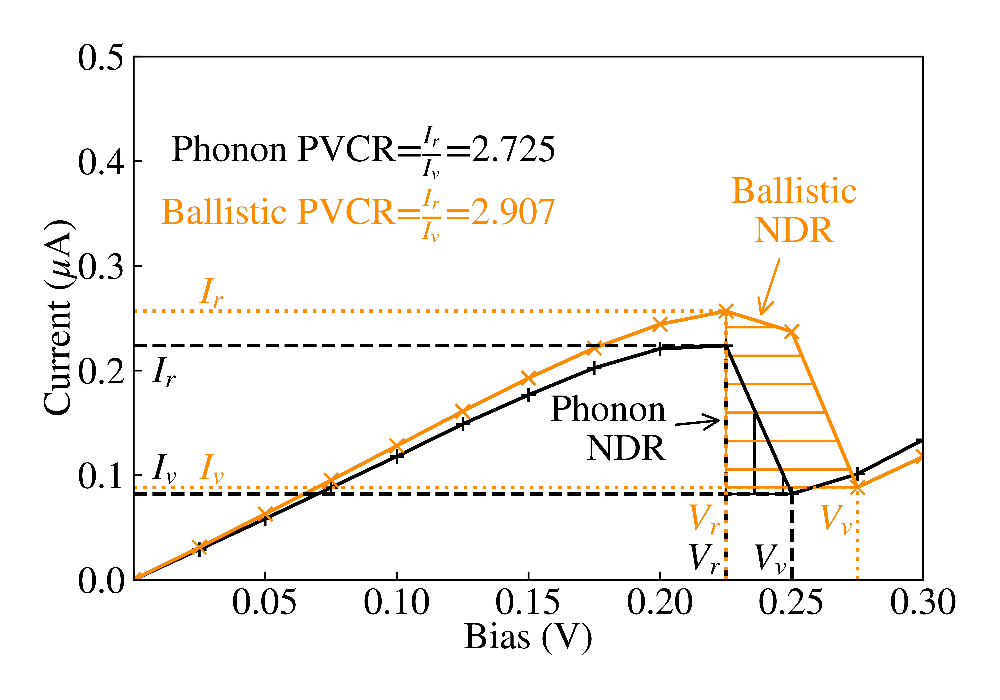
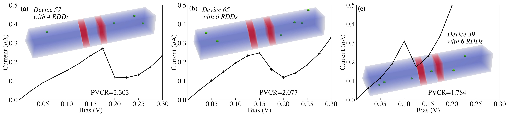

December 2025: PhD Graduation
I'm delighted to announce my graduation!
I'm thankful for my supervisor Professor Vihar Georgiev, for guiding me along this enriching journey.
I'm grateful to my family for supporting my venture for this doctorate.
I'm now looking forward to the next step, starting a research career!
October 2025: PhD publication
My PhD was published!
My thesis is a simulation study of Resonant Tunneling Diodes (RTDs) performed with the Non-equilibrium Green's Function (NEGF) formalism.
Specifically, it focusses on device variation in RTDs, and how this allows RTDs to compose Physical Unclonable Function (PUFs) which can uniquely identify devices they are placed on, in order to fight counterfeiting.
As part of this, I improved the device variation capabilities of Nano-electronic Simulation Software (NESS).
November 2025: Variation study of RTDs
"Sensitivity of resonant tunneling diodes to barrier variation and quantum well variation: A NEGF study" was published.
For this paper, I studied the impact of varying barrier and Quantum Well (QW) thicknesses on RTD current-voltage (IV) characteristics. I also studied the impact of Interface Roughness (IR) at different parts of the RTD, and compared with the effects of thickness, concluding that IR along barriers leads to thicker effect barrier and IR along the QW leads to thinner effect QWs.
October 2025: Interface Roughness in RTDs for PUFs
"Interface roughness in Resonant Tunnelling Diodes for physically unclonable functions" was published.
This accompanies my EuroSOI-ULIS 2024 conference presentation.
This was on how IR along heterostructure interfaces in RTD barriers, such as between a GaAs body and AlGaAs barriers, leads to random variation of the resulting IV characteristics.
This random variation of the output can then be used to encode information, which means multiple RTDs can together form a PUF in order to uniquely identify whichever device they are placed on.
September 2024: Accelerating NEGF with Diffusion-Based Machine Learning
"Diffusion-Based Machine Learning Method for Accelerating Quantum Transport Simulations in Nanowire Transistors" was presented for SISPAD 2024 by my colleague Preslav Aleksandrov.
I'm pleased to work with him on this study, where a Machine Learning (ML) diffusion model was used to accelerate NEGF simulations.
NEGF is accurate and captures quantum effects such quantum tunneling, yet it can take a long time, with multiple iterations of NEGF needed in order to pass the conditions set for a successful simulation.
The purpose of this paper was to explore the use of Diffusion-based ML models to accelerate this time consuming process.
In this paper UNet architecture was demonstrated being trained on simulation data, in order to provide a better simulation starting point for NEGF simulations, accelerating NESS by up to 60%.
July 2024: Impact of IR correlation on RTD variation
My second first-author paper was published!
In this study, I improve the Interface Roughness (IR) generation feature I developed and presented at Euro-SOI ULIS 24 (with the accompaying paper published two months later) to generate IR along two directions and thus emulate such roughness more realistically.
Over the course of this paper I showed that using such 2-dimensional IR along Resonant Tunneling Diodes (RTDs) leads to greater variation in the resulting current-voltage (IV) characteristics, and that increasing correlation length leads to greater IV variation.
Click below to expand my blog post on this, or read the paper here.
Impact of interface roughness correlation on resonant tunnelling diode variation
RTDs are high speed quantum tunneling devices which can reach THz frequencies at room temperature, making them promising for 6G and other applications. Unfortunately, as they scale down to nanometre dimensions RTDs become sensitive to Interface Roughness (IR) along their heterostructure interfaces (such as between the GaAs body and AlGaAs barriers). Understanding how this roughness causes variation in device performance is crucial for building reliable THz RTDs.
Modelling Quantum Transport and Variability
To accurately capture the physics of RTDs, I used the Non-Equilibrium Green's Function (NEGF) formalism together with a Poisson solver within the Nano-Electronics Simulation Software (NESS), a custom simulation platform developed at the University of Glasgow.
The Poisson solver solves the electrostatic Poisson equation to get the potential resulting from charge, which is then used by the NEGF solver module for charge and current calculations. These modules are run self-consistently, with the output of one feeding into the other, until simulations converge.
This approach allows the modelling of quantum effects such as quantum tunnelling and quantisation of charge within the quantum well.
In this study, I introduced an improved IR model that generates roughness using two correlation lengths along a plane. This is a significant step up from previous models that treated IR as a simpler scattering term or my previous work which only considered correlation in one direction.
I simulated a GaAs nanowire RTD with double AlGaAs barriers, applying this new IR model to each interface between the different materials.
Discovering Greater Device Variation
The results showed that the way we model roughness dramatically changes our understanding of device variation:
- Higher Statistical Spread: Using the "improved" 2D correlation model, the standard deviation of the resonant peak (local maxima in current) current and bias was nearly four times greater than the old model. For example, as a correlation length of 2.5nm the voltage standard deviation jumped from 6.2 mV to 24.2 mV.
- Impact of Correlation Length: I found that as the correlation length increased from 2.5nm to 10nm, the standard deviation in the resonant peak IV characteristics roughly doubled.
- Anisotropic Roughness: Because real-world manufacturing often results in roughness that is different in one direction than the other, I tested anisotropic correlation. I found that these differences also lead to distinctive variations in device performance, further highlighting that 2D modelling is important for accuracy.
In conclusion, this research highlights that to accurately predict how RTDs will behave in real-world scenarios, we must account for the complex 2D nature of roughness. These findings will help refine future simulations and support the development of more robust hardware for THz applications.
June 2024: Electron mobility in nanosheet Field-Effect Transistors
"The study of electron mobility on ultra-scaled silicon nanosheet FET" was published.
I'm glad to be able to help Tongfui Liu et al with this study.
The impact of phonon and surface roughness scattering on the electron mobility of n-type silicon nanosheet field-effect transistors (FET) was studied.
November 2024: Random Discrete Dopants in RTDs for PUFs
My first paper, was published today!
I studied the impact of Random Discrete Dopants (RDDs) on Resonant Tunneling Diodes (RTDs), and showed that the resulting variation in IV characteristics allows the encoding of information. Hence, multiple RDD doped RDDs can form Physical Unclonable Functions (PUFs) which uniquely identify devices they are placed on.
Click below to expand my blog post on this, or read an open-access version of the paper here.
Analysis of Random Discrete Dopants Embedded Nanowire Resonant Tunnelling Diodes for Generation of Physically Unclonable Functions
Counterfeiting of semiconductor chips is a major issue which costs companies billions annually, and introduces risks to industry and infrastructure.
A powerful solution to this are PUFs, which can be integrated into integrated circuits (ICs) and generate an unique 'fingerprint-like' output based on random structural variation, which is consequently nearly impossible to clone.
My paper focussed on the feasibility of using nanowire RTDs with RDDs as PUF building blocks.
RTDs are particularly attractive because they are hard to clone, can be manufactured on the same wafer without additional fabrication steps, and are relevant for securing advanced systems such as wireless and 5G/6G technology.
Modelling Quantum Transport and Variability

To study RTDs, quantum mechanical simulations were carried out to model current flow in double barrier III-V (GaAs/AlGaAs) nanowire RTDs as seen above
Specifically, the quantum transport simulation formalism used was Non-equilibrium Green's Function (NEGF), which together with a Poisson equation solver which efficiently calculated the electrostatic potential, accurately captures quantum effects such as quantisation of electron charge in the quantum well (QW) and quantum tunnelling of electrons through barriers.
These NEGF-Poisson simulations were implemented within custom Nano-Electronics Simulation Software (NESS) developed at the University of Glasgow.

A local maxima in current is achieved due to quantum tunnelling of barriers at resonant energy levels, where incoming electrons are of the same energy as a quantised energy level within the QW.
Such a local maxima, and subsequent decrease in current is called a resonant peak, leading the signature Negative Differential Region of decreasing current with bias observed in RTDs.
This can be seen in the above current-voltage (IV) characteristic, marked by a resonant peak in current Ir at bias Vr and a valley in current Iv at bias Vv.
When taking into account (acoustic) electron-phonon scattering, to ensure realistic modelling, the current peak Ir and Peak-to-Valley Current Ratio (PVCR) decrease.
The specific source of randomness investigated were RDDs, the intrinsic statistic variation in the position and number of dopant atoms introduced during manufacturing. I simulated an ensemble of 75 RTDs, each with unique RDD configurations, to evaluate statistic variability.
Generating the Device Fingerprint

I found a direct correlation between the distribution of RDDs and the resulting IV characteristic, as seen above with RTD insets showing the positions of RDDs as green spheres.

The statistical distribution of resulting resonant peak IV values are normal-like, as shown in the above scatter-plot and attached histograms.
To evaluate the suitability of using such distributions to encode information for cryptographic, statistical analysis was carried out.
Such analysis confirmed that the resonant peak current Ir and resonant peak bias Vr datasets are statistically different (based on non-parametric tests; the Wilcoxon Signed‑Rank test, Kolmogorov‑Smirnov test, and Mann‑Whitney test).
Crucially, they also exhibited a strong positive correlation (Pearson coefficient of 0.663). Because they are related but distinct, both parameters can be used simultaneously to encode secure information
A conservative metric of information encoding capability was carried out, the min-entropy Hmin. This metric quantifies information using the probability of the most likely outcome pmax in a probabilistic system using the equation Hmin=-log2(pmax).
Evaluating all 75 devices, including those without NDR, the min-entropy was 1.171 bits.
Such information encoding ability demonstrates that the random and difficult to predict nature of RTDs with RDDs provides sufficient information density for hardware security.
For instance 100 RTDs combined into a PUF can in an ideal case encode 137 bits of information, which is sufficient to derive a 128-bit secret key for cryptographic standards like AES (Advanced Encryption Standard) for device authentication.
In conclusion, this research validates that the intrinsic variability introduced by RDDs in nanowire RTDs offers a robust mechanism for generating PUF building blocks.
May 2024: EuroSOI-ULIS 2024
I'm grateful to present my research in sunny Athens, and take to part in this engaging conference.
To carry out this research, I expanded the roughness in NESS from surface roughness to IR as well.
This presentation explained how IR along heterostructure interface in RTD barriers, such as between a GaAs body and AlGaAs barriers, lead to random variation of the resulting current-voltage characteristics in simulated RTDs.
This random variation of the output can then be used to encode information, which means multiple RTDs can together form a PUF to uniquely identify the device which they are placed on.
July 2022: SINANO 9th Summer School
I'm pleased to help the University of Glasgow host the 9th SINANO Modelling and Simulation Summer School.
July 2022: Theoretical Physics Graduation
Nearly a year since my Masters ended, I'm glad to say that I've graduated from Lancaster University. While it was interrupted by the pandemic, it was an invaluable time, including a year spent studying abroad at Nanyang Technological University (NTU), Singapore.
October 2021: Starting my PhD
I'm looking forward to a new chapter of my research career, starting my PhD at the University of Glasgow.
July 2021: Completing my Masters in Theoretical Physics
I'm glad to complete my Masters in Theoretical Physics at Lancaster University with a First Class Honours.
March 2021: Presenting for my Masters Project
I presented for my Masters project at Lancaster University's 2021 Undergraduate Research Conference.
For this project, I simulated excitonic complexes, composed of electrons and holes, within a type 2 (which means one type of charge carrier is confined, which in this case is holes) quantum dot.
In particular, I studied the binding energies of excitonic complexes, which affects the frequency and thus colour of photons emitted upon decay of these complexes.
This impact on the optoelectronic of quantum dots extends to commercial applications such as solar panels and QLED TVs.
October 2017: Starting my Masters in Theoretical Physics
I'm looking forward to starting my Masters in Theoretical Physics at Lancaster University.